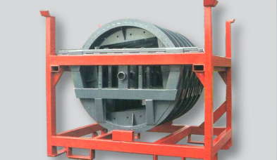
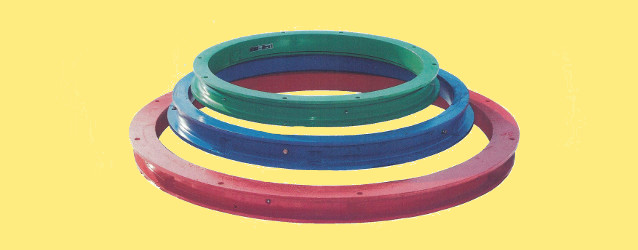

Přesné obrábění kovů a výroba točnic pro přívěsy
STS - služby Kravaře spol. s r.o. navazuje na tradici střediska STS Opava. Vlastní výrobní areál 2,5 ha, soustružení na karuselech, výroba certifikovaných kuličkových točnic a dodávky pro PANAV, Karosu a Bonatrans.
Kuličkové točnice KTK

Kuličkové točnice pro řízení přívěsů a návěsů
Vyrábíme ucelenou řadu jednořadých a dvouřadých kuličkových točnic pro zemědělskou a silniční dopravní techniku. Prověřená kvalita u předních výrobců návěsů ve střední Evropě.
| Typové označení | Vnější průměr | Rozteč otvorů | Axiální zatížení | Hmotnost | Využití / Aplikace | Akce |
|---|
Strojní vybavení a obráběcí kapacity
Disponujeme rozsáhlou výrobní halou se širokým parkem klasických i numericky řízených strojů pro kusovou i sériovou výrobu.
Svislé karuselové soustruhy
Specializujeme se na obrábění velkorozměrových přírub, věnců točnic, bubnů a skříňových těles. Svislá konstrukce karuselů umožňuje snadné ustavení těžkých svařenců a odlitků.

Naši nejvýznamnější odběratelé a partneři
Dlouhodobě dodáváme komponenty a kuličkové točnice lídrům dopravního, železničního a armaturního průmyslu.
PANAV a.s.
Přední český výrobce návěsů a přívěsůBonatrans a.s.
Přední evropský výrobce železničních dvojkolíARMATURY Group a.s.
Významný výrobce průmyslových armaturFerram a.s.
Strojírenská výroba a hutní materiál OpavaSTSZ Trnava
Zemědělská a dopravní mechanizaceFIMAS s.r.o.
Dopravní a lesnická technikaHistorie strojírenského závodu v Kravařích
Společnost STS - služby Kravaře spol. s r.o. vznikla v roce 1992. V roce 1996 jsme v privatizaci odkoupili středisko Kravaře – původní součást státního podniku STS Opava.
Původní opravárenská základna byla postupně transformována v moderní strojírenský podnik specializovaný na přesné obrábění velkých dílců, kuličkové točnice a výrobu ocelových svařenců.
Identifikační a fakturační údaje
Poptávka výroby a točnic
Zašlete nám výkresovou dokumentaci nebo specifikaci požadované točnice. Obratem pro vás zpracujeme technické posouzení a cenovou kalkulaci.
Kostelní 3315/2a, 747 21 Kravaře
+420 553 671 112 / +420 553 671 103
+420 603 257 303 / +420 603 574 242
info@stssluzby.cz